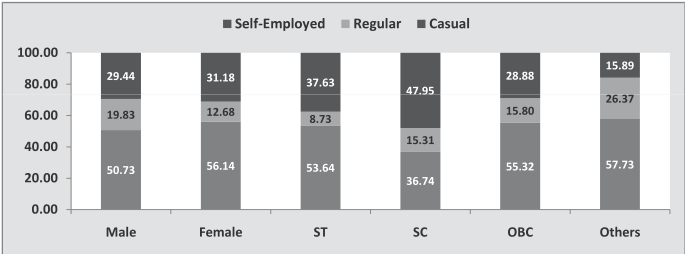

| Category | Self-Employed | Regular | Casual | Total (Calculated) | | :--- | :--- | :--- | :--- | :--- | | Male | 50.73 | 19.83 | ~29.44* | **~90** | | Female | 56.14 | 12.68 | ~31.18* | **~100** | | ST | 53.64 | 8.73 | ~37.63* | **~100** | | SC | 36.74 | 15.31 | ~47.95* | **~100** | | OBC | 55.32 | 15.80 | ~28.88* | **~100** | | Others | 57.73 | 26.37 | 15.89 | **100** | *Note: Values are rounded to one decimal place where possible.*
